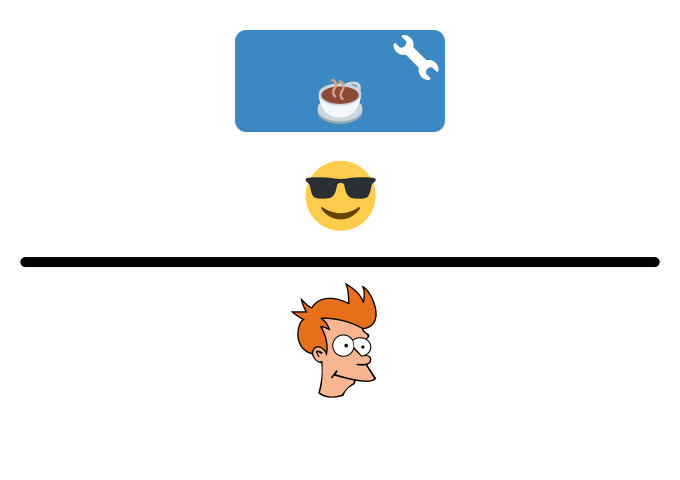
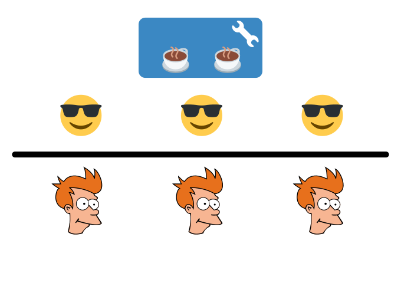
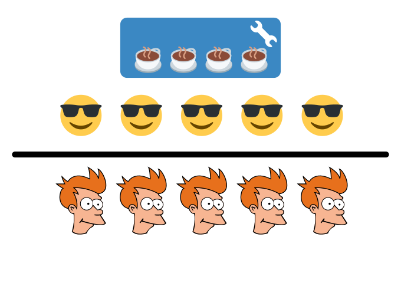
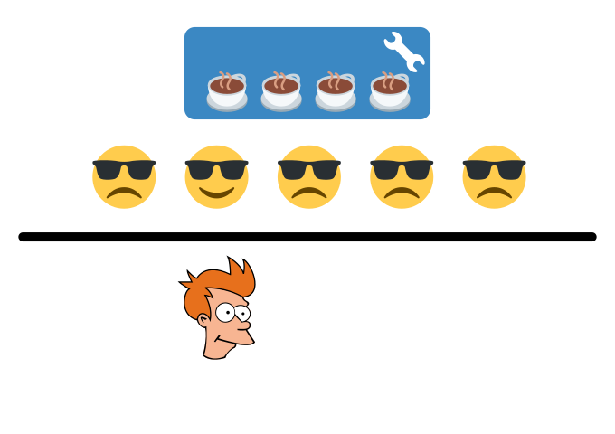
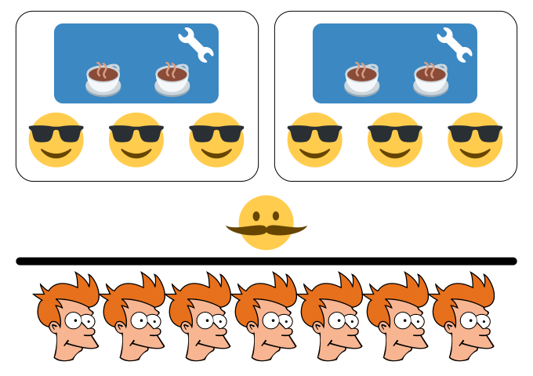
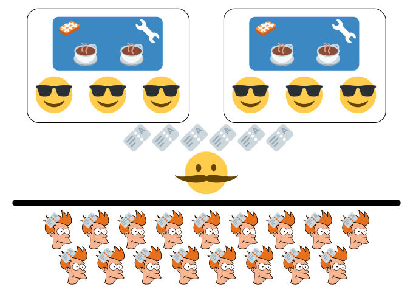
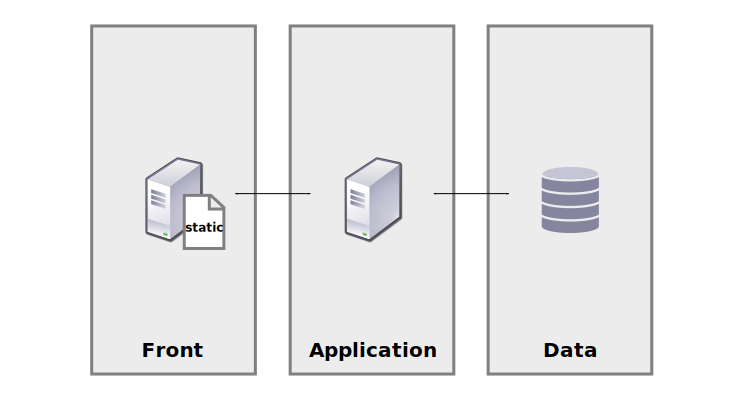
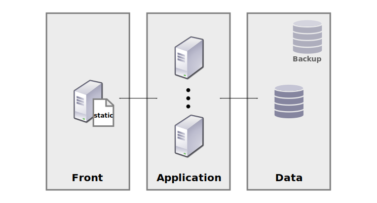
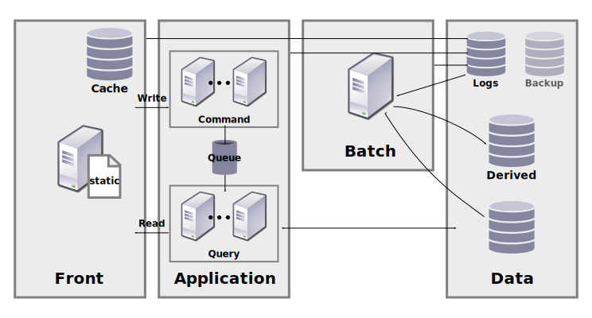
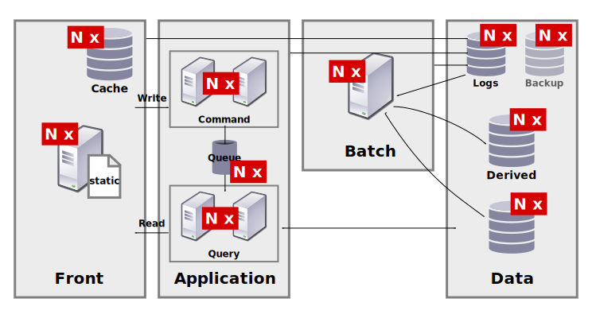

Appli Web
Haute charge
Par Quentin Suire
INSA de Rouen, le 02/09/2015
Quentin Suire
Promo ASI 2011
Ingénieur full-stack chez Viadeo.com
Plan
- What are you talking about?
- Un exemple de scalabilité
- Le cas d'une web app
- Démo
What are you talking about?
Une Application Web
“En informatique, une application web est une application manipulable grâce à un navigateur web.”

Un p'tit schéma

Une bonne web app ?
Les utilisateurs sont heureux
Le site est disponible
L'entreprise ne perd pas d'argent
Le système peut évoluer
Évolutivité
- Produit : Apporter plus de fonctionnalités.
- Utilisation : Supporter un usage plus important.
La scalabilité
“La scalabilité désigne la capacité d'un produit à s'adapter à un changement d'ordre de grandeur de la demande.”

Remarques
Truth #1
It won't scale if it's not designed to scale.
Truth #2
Even if it's designed to scale, there's going to be pain.
Un exemple de scalabilité
Le café du coin

Café

Le client n'attend pas

Café

Café

Café

Café

Les clients sont satisfaits...

mais ils veulent des gaufres

Café

Mais !?! C'est Starbucks !

L'évolution d'une web app
Architecture 3-tiers

Scaling horizontal

Séparer la lecture et l'écriture

Cohérence à terme
Haute disponibilité

Aucun SPoF
Connaître les limites de son système
Tester régulièrement son système